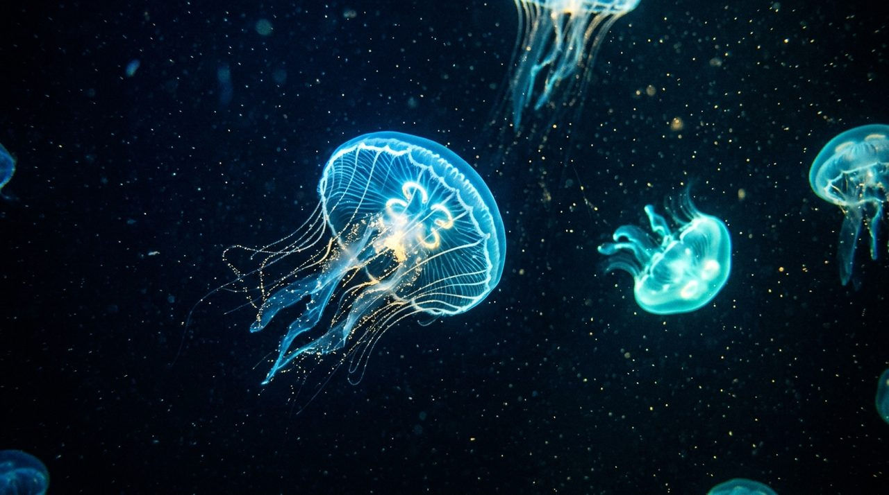

18:42Echoes of the Deep: Hydrophone Chronicles
Journey 3,000 meters beneath Monterey Bay with marine bioacoustician Dr. Elena Rostova. Listen to the haunting echolocation trains of sperm whales and the seismic bass hum of tectonic rifts.
Includes high-fidelity hydrophone audio, synchronized WebVTT captions, and downloadable plain-text transcripts.